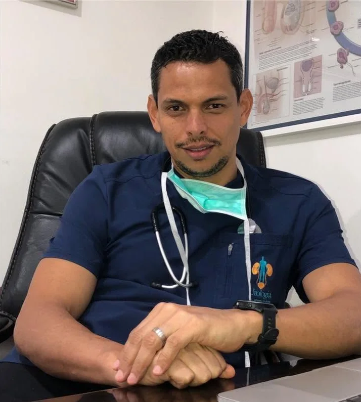
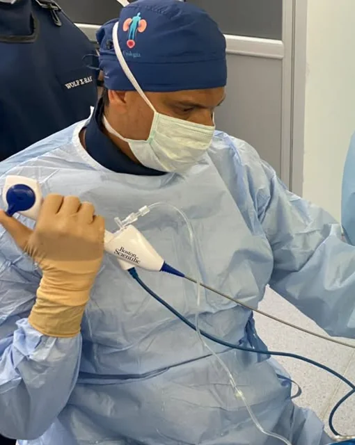

Urología · Heredia, Costa Rica
La precisión médica merece una atención personal.
Urología y cirugía mínimamente invasiva con el Dr. Johnny Piedra Aguilera, formado en la Universidad de Milán y en la Fundación Puigvert de Barcelona. Una consulta reservada, con tiempo para escuchar y explicar cada decisión.

- +15 añosde práctica en urología
- MilánUniversità degli Studi di Milano
- BarcelonaFundación Puigvert
- HerediaCentro Médico San Joaquín
Atención especializada, tecnología y trato humano en cada procedimiento.
- Diagnóstico informado
- Decisiones compartidas
- Confidencialidad
01Áreas de atención
Urología integral, del diagnóstico a la cirugía.
Cada caso empieza con una valoración individual. Cuando hace falta operar, se prefieren las técnicas mínimamente invasivas.
-
Crecimiento de próstata
Valoración de los síntomas urinarios y, cuando el caso lo requiere, cirugía de próstata por vía endoscópica, sin incisiones externas.
-
Cirugía con láser y rayos X
Procedimientos endourológicos guiados por imagen, que acceden por las vías naturales y permiten una recuperación más ágil.
-
Vasectomía sin bisturí
Anticoncepción definitiva con anestesia local, en un procedimiento ambulatorio de unos quince minutos.
-
Circuncisión
Indicación, procedimiento y recuperación a cargo del especialista, con instrucciones claras para cada etapa.
-
Nódulos y masas testiculares
Que no se noten ni molesten no significa que no merezcan atención: una valoración oportuna aclara el diagnóstico.
-
Infecciones urinarias
Examinación, tratamiento y prevención, con especial atención a las infecciones que se repiten.

02El especialista
Experiencia clínica. Criterio humano.
El Dr. Johnny Piedra Aguilera es especialista en urología y cirugía mínimamente invasiva. Se formó en la Università degli Studi di Milano y amplió su preparación en la Fundación Puigvert de Barcelona, uno de los centros de referencia de la urología europea.
Con más de quince años de experiencia, atiende en el Centro Médico San Joaquín, en Heredia, y acompaña cada caso desde la primera consulta hasta el seguimiento posterior.
- Especialidad
- Urología y cirugía mínimamente invasiva
- Formación
- Università degli Studi di Milano, Italia
- Preparación
- Fundación Puigvert, Barcelona
- Consultorio
- Centro Médico San Joaquín, Heredia
03Procedimiento destacado
Vasectomía sin bisturí.
Un método anticonceptivo eficaz y definitivo para quienes ya tomaron la decisión. Se realiza con anestesia local, a través de un único acceso mínimo, y no requiere hospitalización.
- Anestesia
- Local
- Duración
- ≈ 15 min
- Modalidad
- Ambulatoria
Lo que no cambia. El deseo sexual y la erección se mantienen igual, y el procedimiento no predispone a otras enfermedades.
Consultar sobre vasectomíaDespués del procedimiento
-
48 h
Reposo relativo
Actividad tranquila y sin grandes esfuerzos durante los dos primeros días.
-
10 días
Sin relaciones sexuales
Un periodo breve para que la zona se recupere sin molestias.
-
2 meses
Análisis de semen
A los dos meses o tras unas 20 eyaculaciones. Hasta que el médico confirme el resultado, se mantiene otro método anticonceptivo.
Antibióticos y analgésicos, solo según indicación médica. Las indicaciones de cada caso se dan en consulta.
04Cómo es la atención
Cada decisión merece tiempo y claridad.
-
Escucha y evaluación
La consulta parte de los síntomas, los antecedentes y los objetivos de cada paciente.
-
Opciones explicadas
Se presentan las alternativas pertinentes y sus implicaciones, para decidir con información.
-
Seguimiento responsable
El plan incluye las indicaciones y los controles que corresponden a cada situación.
05Preguntas frecuentes
Antes de su consulta.
¿Tiene otra duda? Escriba al consultorio y se la responderemos personalmente.
¿Dónde atiende el Dr. Piedra?
En el Centro Médico San Joaquín, en San Joaquín de Heredia. El horario de consulta es de lunes a viernes, de 8:00 a 18:00.
¿Atiende a pacientes con seguro médico?
Sí. Se atiende a pacientes con o sin seguro médico. Para confirmar la cobertura de su póliza, consulte al consultorio antes de la cita.
¿La vasectomía afecta el deseo sexual o la erección?
No. Después de la vasectomía el semen deja de contener espermatozoides, pero el deseo sexual y la erección no varían, y el procedimiento no predispone a otras enfermedades.
¿Cuándo puedo dejar otro método anticonceptivo?
Solo cuando un análisis de semen lo confirme. Se realiza aproximadamente a los dos meses o tras unas 20 eyaculaciones; hasta entonces, debe mantenerse otro método.
¿Debo consultar por un nódulo testicular que no duele?
Sí. Que un nódulo o una masa testicular no se note ni moleste no significa que no deba valorarse. Una consulta oportuna permite aclarar el diagnóstico.
¿Puedo enviar mis exámenes por WhatsApp?
Para proteger su privacidad, es preferible traerlos a la consulta. Use la mensajería para coordinar la cita y evite enviar información médica sensible por ese medio.
06Contacto
Solicite su consulta.
Escriba o llame al consultorio para coordinar una cita. Se atiende a pacientes con o sin seguro médico.
Por su privacidad, evite enviar información médica sensible por mensajería.
San Joaquín, Heredia Cómo llegar
8:00 a 18:00